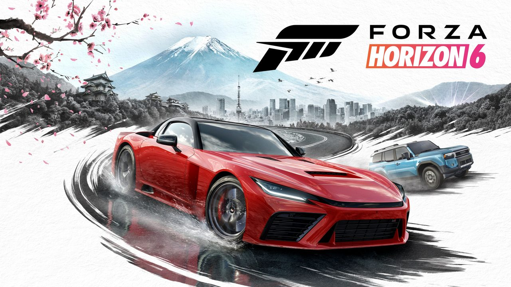

Playground Games no se guardó nada. Forza Horizon 6 lanza este 19 de mayo en Xbox Series X|S y PC, y los análisis ya están: 92/100 en Metacritic con un 100% de recomendación en OpenCritic. Es el juego mejor puntuado de 2026 hasta la fecha, y no es difícil entender por qué.
Japón: el escenario que la serie necesitaba
La serie dejó México, pasó por Gran Bretaña y Australia, y ahora llega a Japón. Y es el mejor escenario que tuvo Forza Horizon hasta ahora. El mapa es el más grande de la serie, con un contraste brutal entre las calles nocturnas de Tokio —cinco veces más grande que Guanajuato en FH5— y los pasos de montaña tipo touge, la zona del Monte Fuji y zonas costeras que van cambiando con las estaciones. La atención al detalle es evidente: el equipo de Playground viajó a Japón para capturar timelpases reales, fotogrametría de árboles y el comportamiento de los pétalos de cerezo cuando un auto pasa a 200 km/h.
Lo que dicen los análisis
La crítica es prácticamente unánime. Los medios destacan que Horizon 6 no reinventa la fórmula sino que la pule hasta el límite: mejor progresión, mejor diseño de mundo, mejor personalización de autos. Windows Central lo llama "una victoria mayor para Xbox". GamesRadar le da 5/5 y señala el modo Car Meets —encuentros en mundo abierto donde podés mostrar tu auto, comprar tuning de otros jugadores y arrancar un Convoy— como uno de los añadidos más naturales de la serie. IGN destaca los nuevos Touge Battles: carreras nocturnas por pasos de montaña que se sienten sacadas de Initial D.
También hay nuevidades en el sistema de garage personalizable por casa, el Estate (una propiedad vacía que podés construir desde cero en el mundo abierto), los Drag Meets en mundo abierto y los Horizon Time Attack Circuits sin carga ni matchmaking. El multijugador cooperativo de EventLab —CoLab— permite construir circuitos con amigos en tiempo real.
Autos: 550+ desde el día uno
Más de 550 autos al lanzamiento, con el auto de portada —el 2025 GR GT Prototype de Toyota Gazoo Racing— haciendo su debut mundial en el juego. Los Forza Edition vuelven con modificaciones extremas que los hacen únicos en rendimiento. Una novedad interesante: los "Aftermarket Cars", autos estacionados por todo el mapa que podés probar antes de comprarlos, siempre a un precio accesible.
Rendimiento técnico
Corre increíblemente bien en todo el hardware. En Xbox Series X y S las reviews son consistentes alrededor del 90/100, igual que en PC. El juego tiene modos de gráficos para la PS5 base (60fps y calidad visual), y en PS5 Pro corre a 60fps sólidos en el modo de mayor calidad. En PC, con DLSS y FSR bien implementados, podés empujar resoluciones altas sin bajar demasiado los detalles.
¿Y en Argentina? Gratis en Game Pass
Esta es la parte más importante para la audiencia local: Forza Horizon 6 entra al Game Pass Ultimate y al PC Game Pass desde el día de lanzamiento, el 19 de mayo. No necesitás comprarlo. Si ya tenés la suscripción, arrancás mañana. Si tenés la Premium Edition, podés estar jugando desde el 15 de mayo con el Early Access que ya arrancó.
Es, sin dudas, uno de los mejores lanzamientos del año. Y el hecho de estar en Game Pass lo convierte en obligatorio para cualquiera que tenga la suscripción.